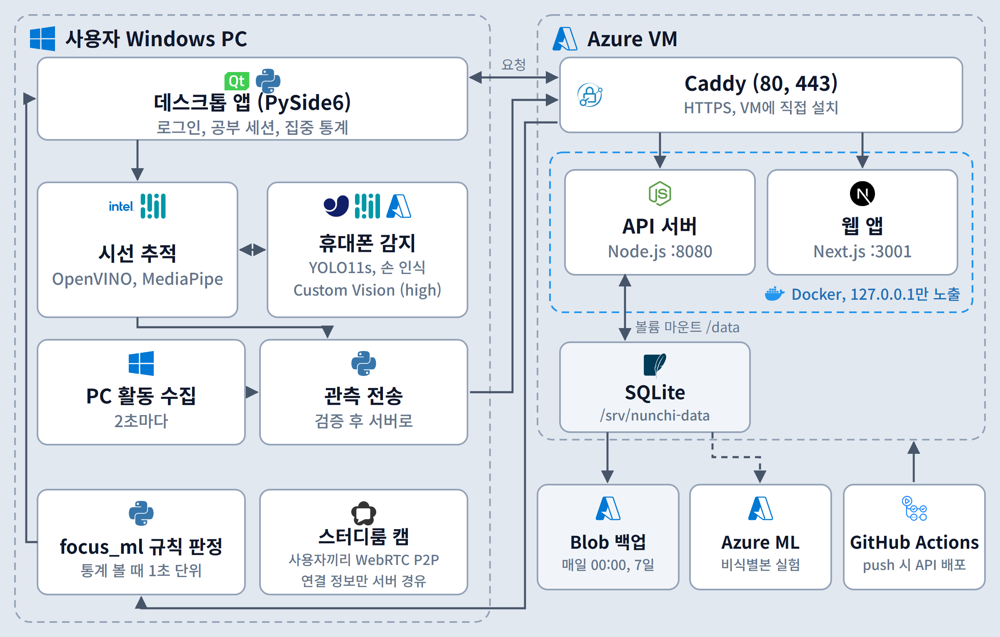

눈치캐치
시선 분석 + 활동 로그 분석으로 집중 상태를 판정
input
카메라 영상
input
프로그램 활동 로그
→
analysis
시선 분석
analysis
프로그램 활동 수집
→
decision · 담당
시선 + 로그
1초 단위 집중 판정
1초 단위 집중 판정
experiment · 담당
규칙 vs ML 비교
Azure ML
Azure ML
→
output
집중 상태 피드백
내가 맡은 부분팀이 함께 만든 부분
전체 아키텍처
사용자 PC의 데스크톱 앱이 관측을 모아 Azure VM 서버로 보내고, focus_ml 규칙이 1초 단위로 집중을 판정합니다. 비식별 처리한 데이터로 Azure ML 실험을 했습니다.

내가 한 일
- 얼굴·시선·휴대폰 감지와 프로그램 사용 기록을 1초마다 묶어 집중·딴짓·시선 이탈·자리 비움을 판정하는 규칙을 설계하고 구현했습니다(Python). 앱의 공부 통계가 이 판정을 씁니다.
- 실제 사용 데이터로 규칙과 ML을 비교했습니다. 사용자 답변이 있는 세션 24개, 답변 34개에서 60초 창 94개를 만들고 로지스틱 회귀·랜덤 포레스트·MLP를 세션 단위 5겹 교차검증으로 평가했습니다.
- 데이터가 적어 점수 하나로 판단하지 않고, 세션 부트스트랩 95% 신뢰구간과 순열 검정으로 우연 여부를 확인했습니다.
- 같은 실험을 Azure ML 작업과 Designer 파이프라인으로 재현하고, 로컬과 결과·시간·비용을 비교했습니다.
- 실험 데이터 비식별 처리 스크립트와 동의 철회 시 수집 중단 방침을 만들었습니다. 팀 저장소에 PR 36개를 머지했습니다.
결과와 배운 점
- 세 종류 분류(집중·딴짓·휴식)에서 규칙 Macro F1 0.490, ML 최고 0.377이었고, 규칙만 우연보다 나았습니다(p=0.001). 그래서 앱 판정은 규칙으로 유지했습니다.
- 가장 어려웠던 점은 정답 부족이었습니다. 질문이 이탈 구간에만 생겨 집중 라벨이 11개뿐이었습니다. 그래서 라벨이 필요 없는 "2분 뒤 이탈 예측"으로 문제를 바꿨고, 세션 경과 시간만으로 AUC 0.630(p=0.001)을 확인했습니다.
- 한 번 실행은 로컬이 Azure보다 5~6배 빨랐습니다. 같은 입력을 다시 돌릴 때는 Designer가 결과를 재사용해 22초, 추가 비용 0원으로 끝났습니다. 데이터·모델 버전 기록이 남아 팀 공유에 유리했습니다.
- 데이터가 적을 때는 "모델이 낫다"가 아니라 "이 데이터로는 우열을 가릴 수 없다"처럼 확인한 범위만 말해야 한다는 것을 배웠습니다.
발표 자료 · 내 파트 (STEP 5)
최종 발표에서 맡은 슬라이드 8장입니다. 누르면 크게 볼 수 있습니다.